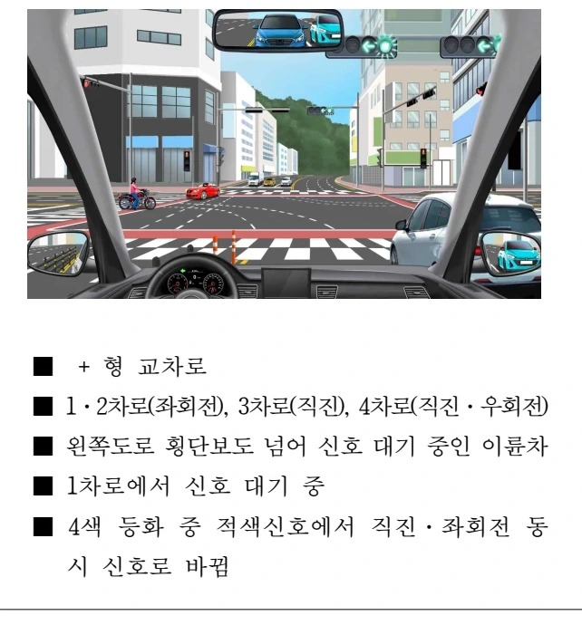

786. 다음 상황에서 가장 안전한 운전방법 2가지는?

- ①소통을 원활하게 하기 위해 적색 신호에 미리 정지선을 넘어 대 좌회전한다.
- ②반대편 도로에서 우회전하는 빨간색 차량은 좌회전 차량이 우선 때문에 주의할 필요가 없다.
- ③차량의 사각지대로 인해 이륜차를 순간적으로 못 볼 수 있기 때 주의해야 한다.
- ④교차로 노면에 표시된 흰색 통행 유도선을 따라 좌회전한다.
- ⑤좌회전하면서 오른쪽 방향지시등을 켜고 왼쪽 도로의 3차로로 진입한다.
정답 보기
정답
③ 차량의 사각지대로 인해 이륜차를 순간적으로 못 볼 수 있기 때
주의해야 한다.
④ 교차로 노면에 표시된 흰색 통행 유도선을 따라 좌회전한다.
근거·해설
운전자는 교차로 상황을 항상 눈으로 확인하는 습관을 가져야 하고 좌회전할 때는 반대편 도로에서 우회전하는 차량에도 주의해야 한다. 좌회전 시에 통행 유도선을 준수하면서 1차로에서 출발하여 왼쪽 도로의 1차로로, 2차로 에 출발할 때는 왼쪽 도로의 2차로로 진입하는 게 안전한 좌회전 방법이다. 왼쪽 도로에 진입한 후에 순차적으로 흰색 점선의 차선에서 차로를 변경해야 한다. 또한 회전 시에는 차량의 A필러로 인해 발생하는 사각지대로 인해 이륜차나 보행자를 순간적으로 못 볼 수 있다는 점도 항상 유의해야 한다. 반대로 생각하면 이륜차 운전자나 자동 차 운전자일 때도 다른 차량들이 나를 항상 볼 수 있다는 생각은 잘못된 것이고 따라서 정지선을 준수하는 등 교통 법규를 지키는 운전자가 되어야 한다.